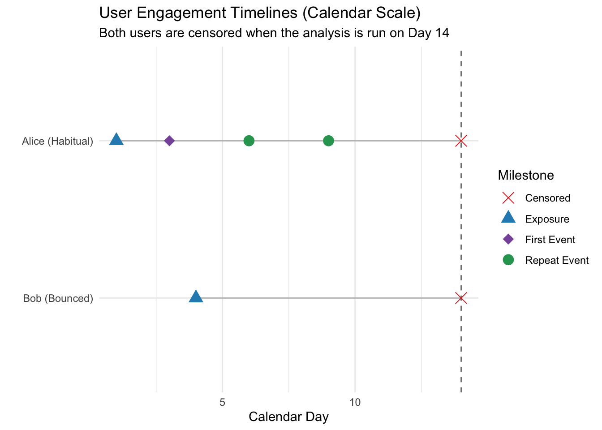

The Team’s Nightmare: Spike and Baseline
Here’s an all-too-common scenario: your team makes a heroic effort to implement a new product feature, finally launches it, and everyone celebrates the initial burst of daily usage—until the graph flattens and returns to its pre-launch baseline. You have launched a dud.
What makes this scenario particularly disturbing is that a proper launch experiment, in which we’d ramp up feature availability and compare the treatment group with a control group, would probably have registered a positive impact on daily usage, fueled mostly by hype and word-of-mouth. But once the initial excitement is over, and users realize they didn’t need the new feature, it’s back to baseline.
Getting a user to click a shiny new button once is easy. The true test of a feature’s value—of its utility to the user—is whether it contributes to user retention. I’ll go so far as to claim that the best proxy for any product’s quality is user retention.
How do we measure user retention? Certainly not by measuring week-over-week retention. I’ll explain.
The Week-over-Week Retention Siren Song
When measuring retention, it is incredibly tempting to reach for simple binary outcomes. We ask questions like, “On average, what proportion of users return within 7 days after using the product?”
DAU has the same limitation at the aggregate level: it tells us how much activity happened, but not whether the launch created durable habits among individual users. A one-off spike and sustained retention can produce similar short-term DAU numbers.
Although simple to query and easy to explain, these metrics are inefficient and can lead to misleading insights:
- Arbitrary Time Horizons: Why 7 days? Why not 30 days? Fixed windows are arbitrary. Suppose your users use the product once every week, and the feature makes them come back twice a week. A metric like week-over-week retention would be blind to such a dramatic impact.
- Masking Acceleration: A fantastic feature might do more than merely bring users back; it might bring them back faster. A fixed-window binary metric only asks if they returned, not how much sooner.
- Confounding Activation with Retention: If your UI change successfully activates a massive wave of new users, a simple population-wide return metric can be heavily skewed. We need a framework that isolates the effect on initial activation from the effect on sustained repeat usage among those already activated.
I claim that there is a statistical tool that addresses all three problems. It is survival analysis, applied to recurrent events. But let’s first look at an example.
Meet Alice and Bob
Let’s look at the timelines of two hypothetical users who enroll in our experiment on different calendar days. We analyze both users on calendar day 14, so they are censored at the same calendar time but have different amounts of follow-up.
Here’s what their timelines might look like:
Here’s the story told by this plot:
- Alice enrolls on Day 1, tries the feature on Day 3, and triggers multiple repeat events before she is censored on the analysis date, Day 14.
- Bob enrolls on Day 4, gets exposed, but never triggers a single event before being censored on that same analysis date.
The key insight here is that we’re going to model two different kinds of gap times:
- The time until the first use of the product (at most one gap time per user)
- The time between subsequent uses of the product (zero or more such intervals per user)
The simple aggregate metrics discussed above struggle with Alice’s repeated events and do not handle Bob’s right-censoring correctly. Simply excluding users like Bob from the analysis is a serious mistake.
Using the Cox Model for Product Usage
To analyze these timelines rigorously, we use the Cox proportional hazards model for recurrent events.
If you took a statistics class, you might remember survival analysis being used in medical research where an “event” means failure or death.
(Whether we like it or not, biostatisticians got there first and named the concepts, which is why terms such as “hazard ratio” and “survival curve” can sound counterintuitive in a product context. I always need a couple of minutes to explain this to a non-technical audience.)
For product usage, we define an event as any day on which the user used the product at least once.
Interpreting Survival Analysis Outcomes
The hazard rate is the fundamental quantity in a survival model. When we compare two treatments, our key metric is their hazard ratio. It sounds like a terrible thing, but in this setting it is exactly what we want to be high.
- The Hazard Rate (\(h(t)\)): Think of this as a user’s instantaneous momentum—the instantaneous rate of engagement at time \(t\), given that they haven’t engaged yet in the current interval.
- The Hazard Ratio (HR): This is our ultimate success metric. It compares the engagement momentum of our treatment group to the control group (\(HR = h_{treatment}(t) / h_{control}(t)\)).
- \(HR > 1\): The treatment accelerates usage. Users return faster and more frequently. This is what we want.
- \(HR = 1\): Flat impact.
- \(HR < 1\): The treatment slows down engagement.
Key Model Assumptions
When applying this model, we rely on four fundamental assumptions:
- Proportional Hazards: We assume that the hazard ratio is constant over time. If our shiny new UI doubles a user’s instantaneous return rate on Day 2, it should also roughly double it on Day 8.
- Non-informative Censoring: We assume that users being censored (their window ending) tells us nothing about their underlying habits. I find this hard to wrap my head around, but it mainly means that we run the analysis at a date that has nothing to do with whether we’re still waiting for some users to act. A fixed administrative cutoff makes this assumption plausible, provided that the cutoff is unrelated to the users’ underlying propensity to return.
- Independence Across Clusters: While Alice’s repeat events are obviously correlated with each other, we assume Alice’s behavior is completely independent of Bob’s.
- Shared Frailty: We assume that each user’s unobserved propensity to engage is constant over the observation window and follows a gamma distribution across users.
A Simulation
Let’s test this model by simulating a reasonably realistic dataset. We will generate 2,000 users who experience varying numbers of repeat events within a fixed 10-day window. Events occur on a daily grid, so each user can have at most one event per day.
To make it more realistic, we inject a gamma frailty (a random effect) per user. This simulates the fact that some people are inherently “power users” while others are inherently casual, inducing true within-user correlation.
Here is the complete simulation code, including the model fitting:
library(survival)
# Set seed for reproducibility
set.seed(123)
n_users <- 2000
obs_window <- 10 # 10-day follow-up window per user
# 1. Simulate Treatment Allocation and Inherent Frailty
# A gamma distribution with mean 1 centers our "average" user
user_frailty <- rgamma(n_users, shape = 2, rate = 2)
users <- data.frame(
user_id = 1:n_users,
treatment = rbinom(n_users, 1, 0.5),
frailty = user_frailty
)
simulated_data <- list()
# 2. Generate timelines using a gap-time formulation
for (i in 1:n_users) {
u <- users[i, ]
current_time <- 0
event_count <- 0
while (current_time < obs_window) {
is_first <- (event_count == 0)
# Baseline rates: harder to activate initially, easier to trigger repeat usage
base_rate <- if (is_first) 0.05 else 0.15
# Let's say our treatment is amazing: doubles activation (HR=2), triples repeat usage (HR=3)
hr <- if (u$treatment == 1) {
if (is_first) 2.0 else 3.0
} else {
1.0
}
# The latent daily rate combines baseline, treatment boost, and personal frailty
rate <- base_rate * hr * u$frailty
# Geometric waiting times are whole days and are always at least one,
# ensuring at most one event per user per day.
daily_event_probability <- 1 - exp(-rate)
t_next <- rgeom(1, prob = daily_event_probability) + 1
if (current_time + t_next <= obs_window) {
# Event occurs inside the window! Reset the gap-time clock.
event_count <- event_count + 1
current_time <- current_time + t_next
simulated_data[[length(simulated_data) + 1]] <- data.frame(
user_id = u$user_id,
treatment = u$treatment,
is_first_event = is_first,
time = t_next, # Whole days since the last event
event = 1
)
} else {
# Window ends before the next event occurs. Censor the remaining time.
t_censored <- obs_window - current_time
simulated_data[[length(simulated_data) + 1]] <- data.frame(
user_id = u$user_id,
treatment = u$treatment,
is_first_event = is_first,
time = t_censored,
event = 0 # Censored observation
)
break
}
}
}
df <- do.call(rbind, simulated_data)
# 3. Fit a Cox model with shared gamma frailty
# strata(...) gives activation and repeat usage separate baseline hazards.
model <- coxph(
Surv(time, event) ~ treatment * strata(is_first_event) +
frailty(user_id, distribution = "gamma"),
data = df
)
summary(model)Call:
coxph(formula = Surv(time, event) ~ treatment * strata(is_first_event) +
frailty(user_id, distribution = "gamma"), data = df)
n= 4137, number of events= 2439
coef se(coef) se2 Chisq DF p
treatment 1.0732 0.0760 0.06576 199.37 1.0 2.9e-45
frailty(user_id, distribu 927.77 569.1 1.2e-19
treatment:strata(is_first -0.4691 0.1034 0.09505 20.57 1.0 5.7e-06
exp(coef) exp(-coef)
treatment 2.9246 0.3419
treatment:strata(is_first_event)is_first_event=TRUE 0.6256 1.5985
lower .95 upper .95
treatment 2.5198 3.3944
treatment:strata(is_first_event)is_first_event=TRUE 0.5108 0.7661
Iterations: 6 outer, 45 Newton-Raphson
Variance of random effect= 0.402791 I-likelihood = -17064.6
Degrees of freedom for terms= 0.7 569.1 0.8
Concordance= 0.786 (se = 0.005 )
Likelihood ratio test= 1481 on 570.6 df, p=<2e-16Reading the Model Output
The shared-frailty term explicitly models each user’s persistent, unobserved propensity to return. The resulting treatment effects are conditional on that frailty: they compare treated and control users with the same latent propensity for engagement. This differs from a marginal model with cluster-robust standard errors, which adjusts the uncertainty for repeated observations without explicitly modeling the user-level heterogeneity.
For product decisions, this conditional interpretation answers an important question: “Does the treatment get otherwise similar users to come back to the product more frequently?”
The coef column is additive on the log-hazard scale. Exponentiating a coefficient converts it into a hazard-ratio multiplier. Because is_first_event = FALSE is the reference stratum, the treatment coefficient describes repeat usage:
\[ HR_{\text{repeat}} = \exp(\beta_{\text{treatment}}) \approx 2.925 \]
This is close to the simulated repeat-use hazard ratio of 3.0.
The interaction term does not represent the first-use hazard ratio by itself. It represents the ratio between the first-use and repeat-use hazard ratios. Its exponentiated estimate is about 0.626, reasonably close to the simulated target of \(2/3 \approx 0.667\). To recover the first-use effect, add the two coefficients on the log-hazard scale—or, equivalently, multiply their exponentiated values:
\[ HR_{\text{first}} = \exp(\beta_{\text{treatment}} + \beta_{\text{interaction}}) = 2.925 \times 0.626 \approx 1.83 \]
This is close to the simulated first-use hazard ratio of 2.0. The estimates do not reproduce the inputs exactly because they come from a finite random sample. Finally, the frailty(...) line in the summary is not another treatment coefficient; it describes the contribution of the shared user-level random effect.
In Real Life
I presented this method at my day job, where it was accepted as a valid way to measure user retention. It will now be included in the playbook for future launches.